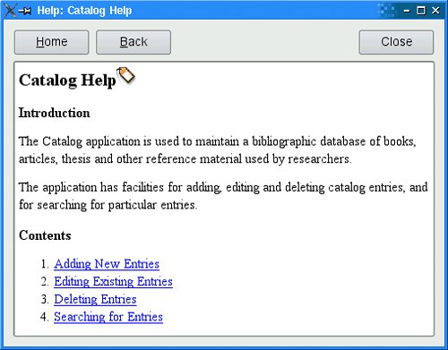

Using QTextBrowser as a Simple Help EngineLarge applications may require more online help than tooltips, status tips, and "What's This?" help can reasonably show. A simple solution to this is to provide a help browser. Applications that include a help browser typically have a Help entry in the main window's Help menu and a Help button in every dialog. In this section, we present the simple help browser shown in Figure 16.3 and explain how it can be used within an application. The window uses a QTextBrowser to display help pages that are marked up with an HTML-based syntax. QTextBrowser can handle a lot of HTML tags, so it is ideal for this purpose. Figure 16.3. The HelpBrowser widgetWe begin with the header file:
#include <QWidget>
class QPushButton;
class QTextBrowser;
class HelpBrowser : public QWidget
{
Q_OBJECT
public:
HelpBrowser(const QString &path, const QString &page,
QWidget *parent = 0);
static void showPage(const QString &page);
private slots:
void updateWindowTitle();
private:
QTextBrowser *textBrowser;
QPushButton *homeButton;
QPushButton *backButton;
QPushButton *closeButton;
};
The HelpBrowser provides a static function that can be called from anywhere in the application. This function creates a HelpBrowser window and shows the given page. Here's the beginning of the implementation:
#include <QtGui>
#include "helpbrowser.h"
HelpBrowser::HelpBrowser(const QString &path, const QString &page,
QWidget *parent)
: QWidget(parent)
{
setAttribute(Qt::WA_DeleteOnClose);
setAttribute(Qt::WA_GroupLeader);
textBrowser = new QTextBrowser;
homeButton = new QPushButton(tr("&Home"));
backButton = new QPushButton(tr("&Back"));
closeButton = new QPushButton(tr("Close"));
closeButton->setShortcut(tr("Esc"));
QHBoxLayout *buttonLayout = new QHBoxLayout;
buttonLayout->addWidget(homeButton);
buttonLayout->addWidget(backButton);
buttonLayout->addStretch();
buttonLayout->addWidget(closeButton);
QVBoxLayout *mainLayout = new QVBoxLayout;
mainLayout->addLayout(buttonLayout);
mainLayout->addWidget(textBrowser);
setLayout(mainLayout);
connect(homeButton, SIGNAL(clicked()), textBrowser, SLOT(home()));
connect(backButton, SIGNAL(clicked()),
textBrowser, SLOT(backward()));
connect(closeButton, SIGNAL(clicked()), this, SLOT(close()));
connect(textBrowser, SIGNAL(sourceChanged(const QUrl &)),
this, SLOT(updateWindowTitle()));
textBrowser->setSearchPaths(QStringList() << path << ":/images");
textBrowser->setSource(page);
}
We set the Qt::WA_GroupLeader attribute because we want to pop up HelpBrowser windows from modal dialogs in addition to the main window. Modal dialogs normally prevent the user from interacting with any other window in the application. However, after requesting help, the user must obviously be allowed to interact with both the modal dialog and with the help browser. Setting the Qt::WA_GroupLeader attribute makes this interaction possible. We provide two search paths, the first a path in the file system that contains the application's documentation, and the second the location of the image resources. The HTML can include references to images in the file system in the normal way and also references to image resources by using a path that begins with :/ (colon slash). The page parameter is the name of the documentation file, with an optional HTML anchor.
void HelpBrowser::updateWindowTitle()
{
setWindowTitle(tr("Help: %1").arg(textBrowser->documentTitle()));
}
Whenever the source page changes, the updateWindowTitle() slot is called. The documentTitle() function returns the text specified in the page's <title> tag.
void HelpBrowser::showPage(const QString &page)
{
QString path = QApplication::applicationDirPath() + "/doc";
HelpBrowser *browser = new HelpBrowser(path, page);
browser->resize(500, 400);
browser->show();
}
In the showPage() static function, we create the HelpBrowser window and then show it. The window will be destroyed automatically when the user closes it, since we set the Qt::WA_DeleteOnClose attribute in the HelpBrowser constructor. For this example, we assume that the documentation is located in the doc subdirectory of the directory containing the application's executable. All the pages passed to the showPage() function will be taken from this subdirectory. Now we are ready to invoke the help browser from the application. In the application's main window, we would create a Help action and connect it to a help() slot that could look like this:
void MainWindow::help()
{
HelpBrowser::showPage("index.html");
}
This assumes that the main help file is called index.html. For dialogs, we would connect the Help button to a help() slot that might look like this:
void EntryDialog::help()
{
HelpBrowser::showPage("forms.html#editing");
}
Here we look in a different help file, forms.html, and scroll the QTextBrowser to the editing anchor. |